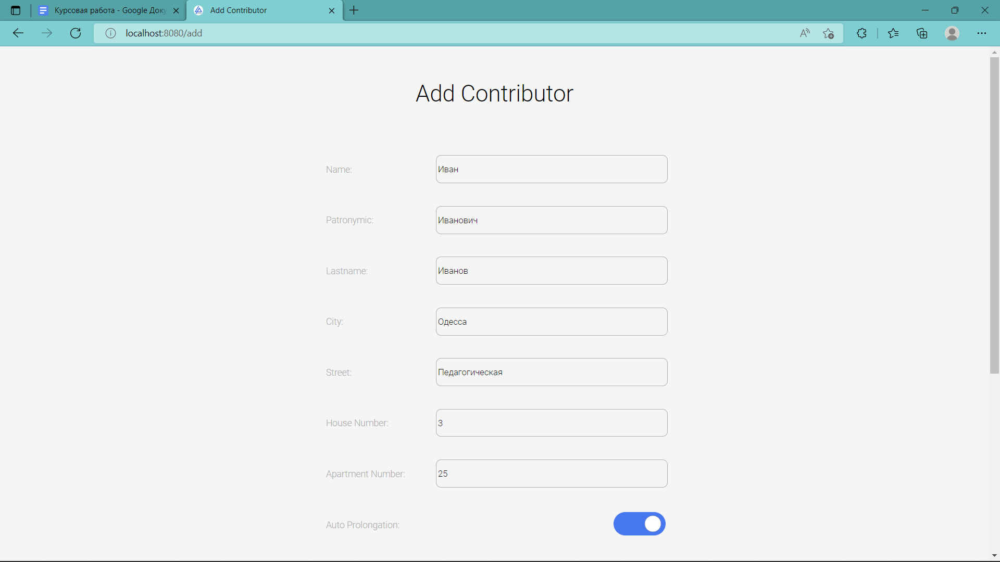
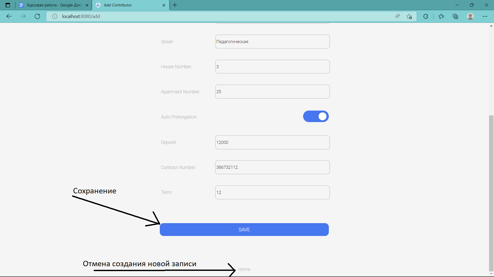
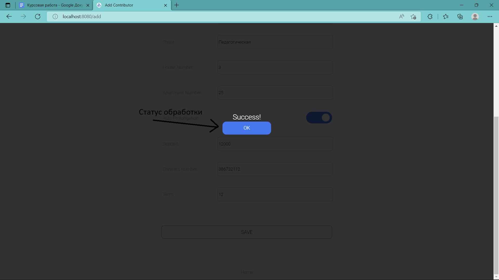
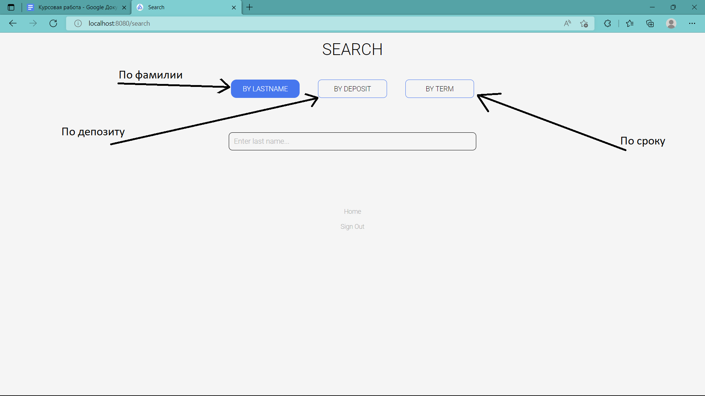
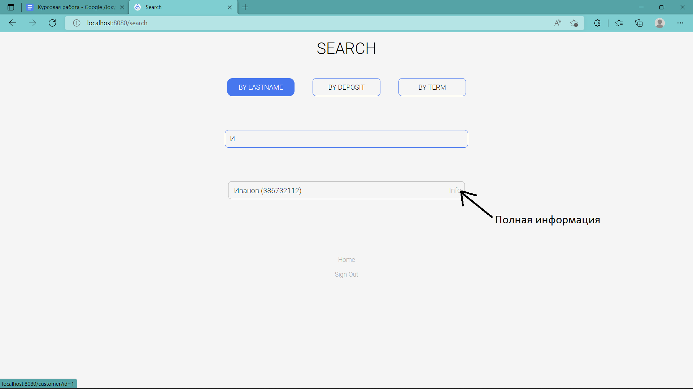
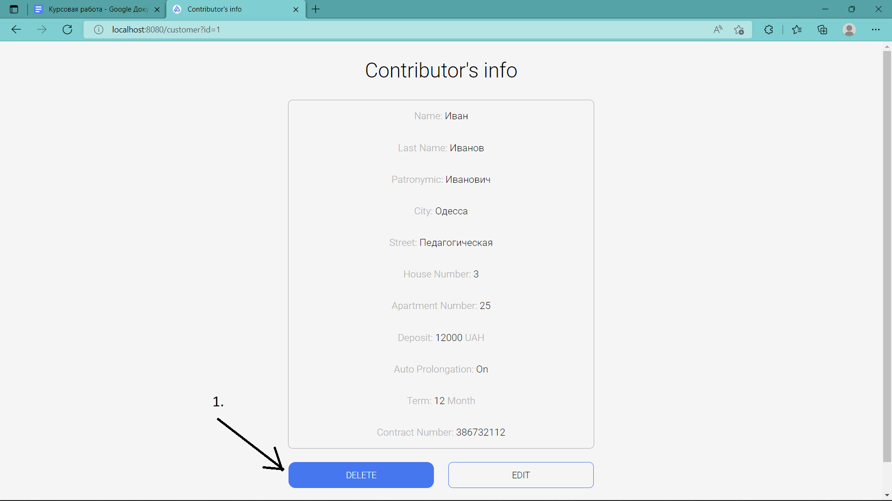
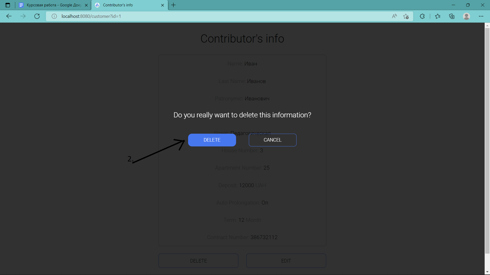
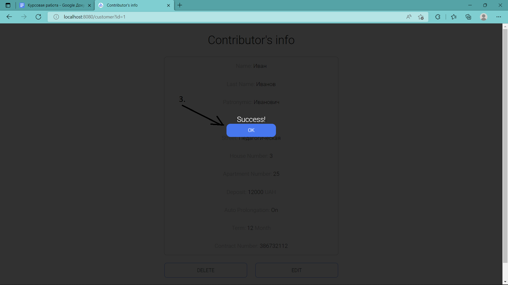

Для входа на сайт администрирования базы данных переходим по ссылке, http://localhost:8080 , предварительно запустив приложение, вводим
следующие данные и нажимаем кнопку “Sign in” (см. рис. 1) :
username: admin
password: 123456
рис. 1
ГЛАВНАЯ СТРАНИЦА
После входа в аккаунт, мы попадаем на главную страницу администратора.
Основные функции показаны на рисунке ниже. (см. рис. 2)
рис. 2
ДОБАВЛЕНИЕ ИНФОРМАЦИИ О ВКЛАДЧИКЕ
После нажатия на кнопку добавления, мы переходим на страницу, которая содержит в себе поля для заполнения.
После заполнения нажимаем кнопку “SAVE”, для отмены - кнопку “Home”. Подтверждаем ознакомление со статусом
выполнения задачи (см. рис. 3, 4, 5).

рис. 3

рис. 4

рис. 5
* При незаполнении поля, или неверном заполнении поля, содержащего строковые данные, они автоматически
заполняются как “---”. Полям с числовыми данными, в случае незаполнения, или неверного заполнения
присваивается значение -1.
* Номер дома, квартиры - целое неотрицательное число
* Депозит - положительное число (разделитель целой и дробной части - точка)
* Номер договора - строка, содержащая только цифры в количестве от 3 до 15
* Срок - целое положительное число(количество месяцев)
ПОИСК ПО БАЗЕ ДАННЫХ
После перехода на страницу поиска, мы можем выбрать поле, по которому будет проводиться поиск. После чего
выбираем режим поиска.
Реализован поиск по фамилии (не учитывая регистр), поиск по вкладчикам, депозит которых - больше заданного
депозита (разделитель целой и дробной части - точка или запятая), поиск по вкладчикам, срок заключения
договоров которых - больше заданного срока (в месяцах, целое положительное, отличное от нуля число). (см.
рис. 6)

рис. 6
Также внизу есть кнопка перехода на домашнюю страницу, и кнопка
выхода из аккаунта. Если найдены совпадения, можно нажать кнопку “info”, и нам откроется полная информация о
вкладчике. (см. рис. 7)

рис. 7
УДАЛЕНИЕ
Для удаления вкладчика из базы данных, необходимо открыть полную информацию о нем (показано в части
“ПОИСК”).
Далее нажать кнопку “Delete”.
В открывшемся модальном окне подтверждаем намерения удалить запись. Готово! (Шаги продемонстрированы на
рисунках 8, 9, 10)

рис. 8

рис. 9

рис. 10
РЕДАКТИРОВАНИЕ ИНФОРМАЦИИ
Редактирование информации о пользователе осуществляется в начальном этапе, как и удаление, только с нажатием
кнопки “EDIT”. Далее мы переходим на страницу, в которой редактируем нужную информацию, по правилам
добавления (Показано в части “ДОБАВЛЕНИЕ”).